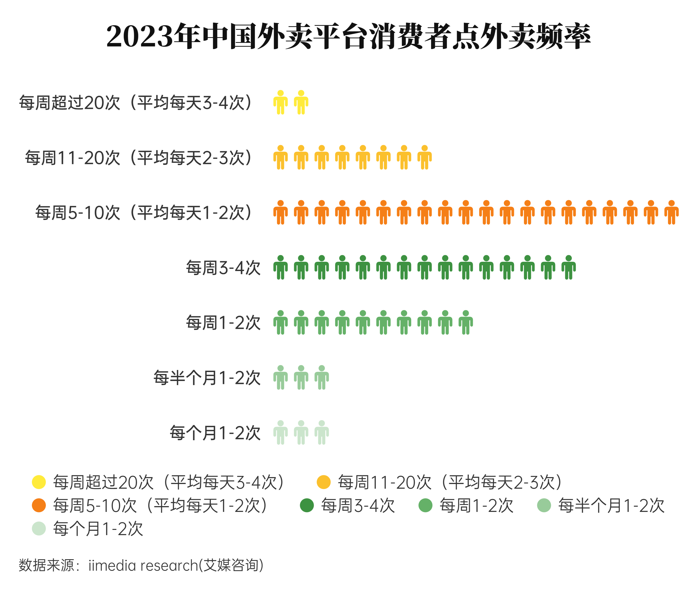

“宅经济”是近年来呈现快速发展的一种经济现象,是居民在住宅中参与产品或服务的价值创造活动,或者是与居民在住宅中完成商品或服务交易相关的经济活动,呈现出与传统经济活动显著不同的特征。 简单来说,“宅经济” 就是与居民待在家里相关的经济活动。

从外卖看宅经济

—— 宅居消费的“大数据”分析
在当今这个快节奏与高压力并存的时代，"宅"已成为一种生活方式的新常态，而外卖，作为宅经济中最为活跃的一分子，正悄然编织着都市生活的新图景......
你了解宅经济吗？
新闻导读
万亿宅经济走红，就业与消费酝酿颠覆式变革
2022-01-29
“宅经济”的发展及其面临的挑战
2022-02-05
后疫情时代下大学生对“宅经济”的需求分析
2022-03-19
宅经济是座金矿
2022-04-16
“宅经济”催动的新机遇，品牌如何最快把握？
2022-05-07
2022-01-29
“宅经济”的发展及其面临的挑战
2022-02-05
后疫情时代下大学生对“宅经济”的需求分析
2022-03-19
宅经济是座金矿
2022-04-16
“宅经济”催动的新机遇，品牌如何最快把握？
2022-05-07
观察丨“宅经济”刚性需求引爆电商消费的“二次增长”
2020-02-17
疫情催生宅经济 “万物皆可外卖”成趋势
2020-02-29
“宅经济”进入数字化时代（经济透视）
2020-03-03
从“宅生活”到“宅经济”
2020-03-24
疫情催生“宅经济”，未来零售行业或现新转机？
2020-05-13
火红“宅经济”：意外崛起还是未来趋势？
2020-07-19
2020-02-17
疫情催生宅经济 “万物皆可外卖”成趋势
2020-02-29
“宅经济”进入数字化时代（经济透视）
2020-03-03
从“宅生活”到“宅经济”
2020-03-24
疫情催生“宅经济”，未来零售行业或现新转机？
2020-05-13
火红“宅经济”：意外崛起还是未来趋势？
2020-07-19
现如今，疫情已然过去，人们恢复正常的生产生活，但“宅经济”发展不会停滞，其中外卖是“宅经济”的重要组成部分。为了探究宅经济的发展，我们统计了各大省市的外卖销量情况
消费地图
外卖员的足迹，遍布了各大省市。
如果只从城市排布来看，外卖消费者的分布是这样的：
经过调查，外卖订单量最多城市的Top10分别是他们：
可以看出，外卖消费者主要集中在北京、上海、深圳、广州、成都、杭州等城市。而单论外卖订单量，北京竟超过第六名1倍!
这里有你的城市吗？
与此同时，我们发现大多数人更倾向于点本地特色菜品。
无论是本地人的坚守还是外来人的尝鲜，都是对当地风俗的热爱。
表格一览
影响大家点外卖的因素有很多，为了进行分析，我们整理出了以下几条：
滚动以查看更多图片



每周点1-2次，3-4次，5-10次的消费者，组成了外卖大军中的大多数，20-34岁的人们已经把外卖写入自己的食谱，女性的订单量占比更是达到了59.0%,我们已经将外卖“生活化"，“常态化”。究竟是自己下厨不方便，还是出门下馆子太劳累？或许，这些都是原因的一部分。
大多数人认为自己没有时间或不想做饭，也有半数人图方便省事，于是我们统计了各个时间段的外卖品类占比，看看是不是有当我们不想做饭的时候，选择饭点外卖会更多。
事实果真如此。在早饭，午饭，晚饭的时间点前，美食类外卖的占比高于90%。看来大家是真的宅在了家中，将“宅”进行到底。
同时，对所有外卖的品类分析中，我们发现当下人们的外卖包装里面不只有主食饭菜，还有各种各样的餐饮，如甜点，蔬果，饮品。“宅经济”模式下，生产和消费均呈现出“全天候”的特点。
尽管没有到店，”顾客就是上帝“的宗旨仍然在我们和店家心中，像令牌，又像训诫。外卖平台究竟用了怎样的巧计夺得了消费者的欢心？
作为明智的消费者，我们考虑的因素真不少。65.31%的人追求更多更好的餐饮，50.38%的人会更考虑配送的速度，配送费、价格、习惯、配送态度，这都是我们的考虑因素。而配送的速度和配送费都与配送距离息息相关。

在线餐饮让更多的餐饮服务从不可达变成了30分钟内可上门的服务，使人们在饮食上有更多选择，2023年用户平均购买的餐饮品类数比2020年增加了1.3个。同时各大平台不断优化配送服务，增加可选品种，争取到了自己的死忠粉。
在挑剔的消费者筛选下，美团和饿了么成功抢下超过一半的顾客。
因此，分析这两个平台的数据，更有利于我们掌握大多数人的情况。统计了2018-2024年美团外卖各品类订单量的占比后，我们得出了下面的统计表。
尽管有所下降，快餐简餐仍然是超过半数人的首选，而饮品作为新兴的非主食类饮食，近年来”异军突起“，成为了外卖行业的”后起之秀“。
此外，外卖价格也会影响我们的选择。
21-40元是我们选择的大区间，外卖并不会成为我们放纵自我的奢侈之地。
在外卖需求的飞速增长下，对外卖行业的要求也越来越高，外卖企业的规模也在不停发展。
更大规模的外卖企业，为当前和之后外卖乃至宅经济的发展提供了强有力的支撑。因此我们有充分的理由相信，外卖经济在未来仍然有着不俗的发展势头。而从商家和消费者的评论来看，外卖在我们的心中早已是不可或缺的一环。
（词频分析：通过jiaba分词器对全部评价文本进行了清洗，同时排除无意义的动词连接词等，获得了以下31个好评高频词，对其进行统计：）
结论
作为“宅经济”的重要组成，外卖已经渗透进人们的生活：从年轻人到老年人、从早午饭到下午茶、夜宵，都能看见外卖的身影，都有着宅经济的体现。同时，根据《2023年中国外卖平台消费者认为外卖行业需改进的方面》，位居前列的有商家的服务质量、食品质量和分量、食品的健康程度，这背后折射出的是消费者对于健康的重视、对外卖食品安全等需求层次的提高，相信有更多的人参与进外卖消费之中，能够给我们的食品健康和生命安全带来更好的保障。
同时，政策、经济、社会和技术四驾马车也持续为餐饮外卖行业保驾护航。自2020年疫情发生以来，针对餐饮行业的复苏与稳定，各级政府出台了有力的相关政策，涉及税收减免、社保费减免、金融贷款支持等多方面，全力保障中小餐饮企业顺利渡过疫情期，实现市场的可持续健康发展；在经济、社会、技术多重利好因素的作用下，我国餐饮外卖行业发展脚步依然稳健有力。
2020年2月
《关于支持新型冠状病毒感染的肺炎疫情防控有关税收政策的公告》提出对餐饮业免征增值税。
《关于支持新型冠状病毒感染的肺炎疫情防控有关税收政策的公告》提出对餐饮业免征增值税。
2021年3月
《政府工作报告》指出要引导银行扩大信用贷款、持续增加首贷户，推广随借随还贷款，使资金更多流向小微企业、个体工商户、新型农业经营主体，对受疫情持续影响行业企业给予定向支持。
《政府工作报告》指出要引导银行扩大信用贷款、持续增加首贷户，推广随借随还贷款，使资金更多流向小微企业、个体工商户、新型农业经营主体，对受疫情持续影响行业企业给予定向支持。
2022年6月
商务部等11部门办公厅发布了关于促进餐饮业恢复发展扶持政策贯彻落实工作的通知。这份通知旨在推动《关于促进服务业领域困难行业恢复发展的若干政策》的落地实施，促进餐饮业加快恢复发展。
商务部等11部门办公厅发布了关于促进餐饮业恢复发展扶持政策贯彻落实工作的通知。这份通知旨在推动《关于促进服务业领域困难行业恢复发展的若干政策》的落地实施，促进餐饮业加快恢复发展。
2023年6月
市场监管总局和商务部发布了《关于发挥网络餐饮平台引领带动作用、有效防范外卖食品浪费的指导意见》。该政策鼓励网络餐饮平台优化餐品供给结构，推广小份餐品，优化餐品信息展示，以及强化全流程消费提醒，以减少食品浪费。
市场监管总局和商务部发布了《关于发挥网络餐饮平台引领带动作用、有效防范外卖食品浪费的指导意见》。该政策鼓励网络餐饮平台优化餐品供给结构，推广小份餐品，优化餐品信息展示，以及强化全流程消费提醒，以减少食品浪费。
2024年3月
商务部等9部门正式印发了《关于促进餐饮业高质量发展的指导意见》。该指导意见以习近平新时代中国特色社会主义思想为指导，从7个方面提出22项具体政策措施，包括提升餐饮服务品质、创新餐饮消费场景。
商务部等9部门正式印发了《关于促进餐饮业高质量发展的指导意见》。该指导意见以习近平新时代中国特色社会主义思想为指导，从7个方面提出22项具体政策措施，包括提升餐饮服务品质、创新餐饮消费场景。
·
“宅经济”是随着经济发展， 在信息技术进步和广泛应用的推动下而出现、发展的一种生活模式和生产方式，满足了人们需求层次不断提高的要求，也适应了企业降低成本、提高效率、增强灵活性的发展需要。随着新一轮科技革命和产业变革广泛兴起，科学技术更新迭代，我国经济高质量发展，居民消费水平不断提高，相关法律法规不断完善，我们预测“宅经济”发展趋势如下：
“宅经济”发展的范围不断扩大。目前已经渗透至人们生活的各方面：电子商务、大众传媒、仓储物流、移动通信、餐饮食品、医药保健等，在物联网、大数据、人工智能和云计算等技术的支撑下，会有更广泛的消费需求通过互联网得到实现。
“宅经济”参与主体将越来越广泛。目前，“宅经济”已经渗透到各个年龄阶段的人群，随着政府部门相关适老化法律法规不断完善，企业相关技术不断更新，中老年人群参与率仍会提高。
“宅经济”的发展质量将不断提高。信息时代下，越来越多的线下实体店向线上转型，抢占线上市场，实现线下线上相融合；在基础设施方面，随着基础设施投资增加和网络技术改进，“宅经济”的网络服务质量不断提高，在改善消费者数字体验的同时提供更加安全可靠的服务;在商业模式方面，随着企业商业思维的转变，“宅经济”服务领域和服务质量都将不断提高。
总的来说，“宅经济”发展空间巨大，将成为中国经济增长的重要力量。
原来，我们随手下单的外卖，正是当下充满活力的经济动脉。